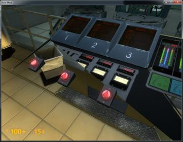

I just installed the latest AMD Catalyst drivers then downloaded BM. It glitches out on moving polygons. Check out the Screen grabs.
Driver Packaging Version 8.961-120405a-137813C-ATI
Catalyst Version 11.5
Provider Advanced Micro Devices, Inc.
2D Driver Version 8.01.01.1243
2D Driver File Path /REGISTRY/MACHINE/SYSTEM/ControlSet001/Control/CLASS/{4D36E968-E325-11CE-BFC1-08002BE10318}/0000
Direct3D Version 7.14.10.0903
OpenGL Version 6.14.10.11631
Catalyst Control Center Version 2012.0405.2205.37728
Graphics Card Manufacturer Powered by AMD
Graphics Chipset ATI Radeon HD 3400 Series
Device ID 95C5
Vendor 1002
Subsystem ID 2252
Subsystem Vendor ID 1787
Graphics Bus Capability PCI Express
Maximum Bus Setting PCI Express x16
BIOS Version 010.085.000.001
BIOS Part Number 113-XXXXXX-X10
BIOS Date 2008/08/28
Memory Size 2303 MB
Memory Type HyperMemory
Core Clock in MHz 600 MHz
Memory Clock in MHz 400 MHz
